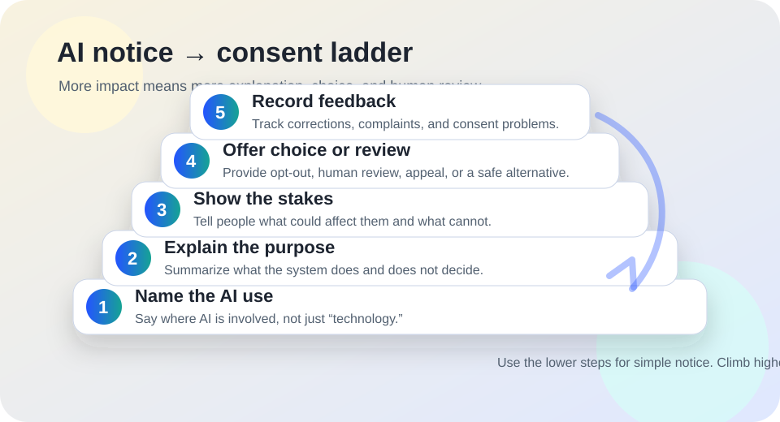

AI literacy
AI consent and disclosure.
Use this when a school, workplace, public office, health program, newsroom, or community group needs to tell people when AI is involved — and decide when notice is not enough.
The short answer
People should be told when AI materially shapes something they see, hear, submit, are evaluated by, or are asked to trust. The more personal impact, risk, power imbalance, or lack of alternatives a use has, the more it needs clear notice, meaningful choice, human review, and a way to challenge errors.
Disclosure is not magic. A vague “AI may be used” label does not fix unsafe design, biased data, inaccessible workflows, privacy problems, or a missing appeal path. Consent is meaningful only when people understand the AI use, can refuse without unfair penalty where refusal is realistic, and have a safe alternative for high-stakes needs.

Why disclosure matters
The NIST AI Risk Management Framework describes trustworthy AI work in terms such as validity, reliability, safety, security, privacy, fairness, transparency, explainability, interpretability, and accountability. Disclosure supports several of those goals because people cannot question, correct, avoid, or contextualize a system they do not know is involved.
The archived Blueprint for an AI Bill of Rights similarly emphasizes notice and explanation for automated systems that may affect people. UNESCO’s generative AI guidance for education and research also points to human agency, transparency, privacy, and safeguards when AI is introduced into learning environments.
Use these sources as public-interest guidance, not as a one-size legal rule. Specific legal duties vary by country, sector, funding, role, contract, age group, disability access needs, labor rules, privacy law, and civil-rights context.
Disclosure is not the same as consent
Disclosure
“AI is involved here. This is what it does, what it does not do, and how to get help.” Disclosure is often the minimum for transparency.
Meaningful consent
“You understand the AI use and can say yes or no without losing a necessary service unfairly.” Consent requires real choice, not just a buried notice.
Human review
“A qualified person can check, override, or explain an AI-assisted result before harm becomes final.” Review matters most when decisions affect people.
Refusal or alternative
“There is a non-AI path or practical workaround.” This is important for sensitive data, accessibility, children, public services, and high-stakes decisions.
A practical decision table
| Situation | Usually needs | Example |
|---|---|---|
| Low-risk AI assistance | Clear notice and correction path | AI helped summarize a public meeting agenda, with human editing before publication. |
| AI-generated or AI-edited content people may rely on | Disclosure, limits, source links, and a way to report errors | A public FAQ says AI assisted the draft and staff reviewed the final version. |
| Optional convenience feature | Notice plus opt-in or easy opt-out | A chatbot can help navigate a site, but a phone, email, form, or human desk remains available. |
| Personal data or sensitive context | Plain explanation, privacy check, minimization, and refusal or safer alternative where feasible | A school wants to use AI to analyze student writing, support needs, or behavior notes. |
| High-stakes decision support | Disclosure, human review, appeal path, recordkeeping, and stronger safeguards before use | AI influences eligibility, discipline, benefits, hiring, housing, health, finance, safety, or legal status. |
When notice may be enough
- The AI use is low stakes, easy to ignore, and does not affect a person’s rights, access, safety, finances, education, employment, housing, or legal status.
- The output is reviewed by a responsible human before publication or use.
- The notice is placed near the AI-assisted feature or content, not hidden only in a general policy page.
- People can report errors, ask for clarification, or choose another simple path.
- No sensitive personal data is required for the AI feature.
When people should have a choice, review, or refusal path
If the AI use changes what people can access, how they are assessed, what information is collected about them, or whether they can complete a necessary task, do not rely on notice alone.
- Public or essential services: offer a human or non-AI route when AI support fails, excludes someone, or is inaccessible.
- Children and students: explain AI use in age-appropriate language and avoid treating silence as consent.
- Workplaces: do not bury AI monitoring, scoring, scheduling, or productivity analysis in vague policy language.
- Health, legal, finance, housing, benefits, and safety: provide human review and appeal before AI-influenced errors become final.
- Disability and language access: provide accessible formats, interpretation, assistive-technology compatibility, and non-chatbot paths where needed.
Plain-language disclosure templates
AI-assisted draft: “AI helped draft or summarize this material. A person reviewed and edited it before publication. If you spot an error, contact [contact path].”
AI-supported decision: “AI may help organize or flag information for this decision, but it should not be the final authority. You may ask for human review, correction, or appeal through [path].”
Optional AI feature: “This AI tool is optional. You can use [non-AI path] instead. Do not enter sensitive personal information unless the form specifically asks for it and explains why.”
AI chatbot or automated help: “This assistant may make mistakes and cannot decide your rights, benefits, eligibility, discipline, medical care, legal status, or deadlines. For important issues, use [human contact path].”
High-stakes no-consent warning: “Do not use AI for this step until the people affected have clear notice, a practical way to get human review, and a safe alternative if they cannot or should not use the AI path.”
Consent and disclosure checklist
- Name: Can a person tell exactly where AI is involved?
- Purpose: Does the notice say what the AI does and what remains human responsibility?
- Stakes: Does it explain what could affect the person and what cannot?
- Data: Does it say what information is collected, submitted, stored, or shared, without legalistic fog?
- Choice: Is there an opt-in, opt-out, refusal, non-AI path, or human review where stakes require it?
- Accessibility: Is the notice readable, translated where needed, compatible with assistive technology, and available outside a chatbot?
- Appeal: Can people correct, contest, or escalate an AI-influenced outcome?
- Record: Will complaints, corrections, refusals, and failures be logged and used to improve the system?
Bad signs
- Vague: “We use advanced technology” without naming AI or explaining its role.
- Coercive: “By continuing, you consent” when the person needs the service and has no realistic alternative.
- Hidden: The only disclosure is buried in a long policy page unrelated to the actual decision point.
- Overconfident: The notice says the AI is accurate, objective, or unbiased without evidence and limits.
- Unreviewable: No one can explain, correct, appeal, or override an AI-influenced result.
Sources and further reading
- NIST — AI Risk Management Framework
- NIST — Artificial Intelligence Risk Management Framework (AI RMF 1.0)
- Archived White House OSTP — Blueprint for an AI Bill of Rights
- UNESCO — Guidance for generative AI in education and research
- European Commission — AI Act overview
This guide is public education, not legal advice. Consent, notice, automated decision, privacy, accessibility, labor, education, consumer-protection, and civil-rights duties vary by jurisdiction and setting. For binding obligations, consult the relevant authority and qualified counsel.